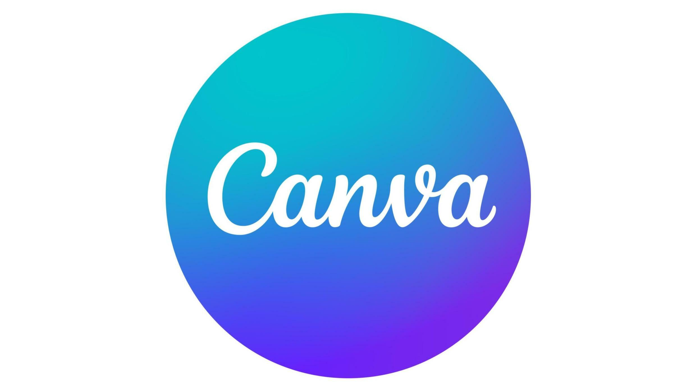

En lo que se refiere a la seguridad, lo principal es cuidar y resguardar a las personas. Aunque los problemas que puedan ocurrir en las máquinas solo afectan sus componentes materiales, los daños sufridos por las personas perduran a lo largo del tiempo y tienen consecuencias en diferentes áreas de sus vidas
Todos somos vulnerables, y nuestra vulnerabilidad aumenta cuanto más nos exponemos. En la red, compartimos parte de nosotros con los demás. Entre los riesgos que podrían ponernos en peligro se encuentran:
El acceso involuntario a información ilegal o perjudicial.
Desarrollamos la idea, haciendo dibujos detallados de nuestro diseño.
Planificamos el trabajo y elaboramos un presupuesto.
Luego, construimos el objeto siguiendo la planificación y las normas de seguridad.
Probamos si funciona y, si no, volvemos a diseñar y repetimos el proceso hasta que funcione.
Finalmente, presentamos nuestro trabajo a los demás o, en la industria, lo presentamos a los clientes para su comercialización.
3. En vídeo
4. Tú eres tu mejor protector
En la Red, la mayor protección que podemos tener somos nosotros mismos y los adultos de confianza: padres, profesores y especialistas.
A continuación te ofrecemos unas recomendaciones básicas para protegerte, que pueden considerarse un código básico de circulación por la Red para los jóvenes:
Habla con tus padres, ellos siempre te ayudarán. Si recibes algo raro o desagradable, habla de ello con un adulto o denúncialo.
Evitahablar con personas desconocidas y ten en cuenta que las apariencias pueden ser engañosas. Desconfía de aquellos que intentan obtener demasiada información sobre ti. Recuerda que hay formas más seguras de hacer nuevos amigos.
Piensa antes de compartir fotos o vídeos personales en línea. Si decide hacerlo, elija plataformas con acceso limitado y asegúrese de que no afecten su imagen actual o futura, siempre con el consentimiento de sus padres. Es importante recordar que no puedes publicar imágenes de otras personas sin su permiso. Practica el respeto hacia los demás.
Es fundamental respetar la edad mínima establecida para acceder a determinados sitios. Esta información se detalla en las condiciones de uso de la página, las cuales es necesario leer antes de hacer clic en el botón "Acepto". Al pulsar dicho botón sin leer, corremos el riesgo de autorizar a los propietarios del sitio a utilizar nuestros datos, imágenes y otros elementos personales.
Investiga sobre los sitios antes de participar en ellos. En ciertos lugares, no es factible cancelar la suscripción, por lo que debemos ser precavidos con la información que proporcionamos, ya que en ocasiones cedemos nuestros datos de manera permanente.
Actividad: ¡Elabora tu Canva!
Objetivo: Crear una presentación en Canva que aborde los aspectos fundamentales de la ciberseguridad, concienciando a los estudiantes sobre la importancia de protegerse en línea.
Pasos:
Investigación: Investiga sobre conceptos clave de ciberseguridad, como contraseñas seguras, privacidad en línea, phishing y seguridad en redes sociales.
Creación de Contenido: Utiliza Canva para crear diapositivas atractivas. Incorpora imágenes, gráficos e iconos para ilustrar conceptos. Mantenga el texto conciso y utilice viñetas para resaltar puntos clave.
Consejos Prácticos: Incluye consejos prácticos sobre cómo crear contraseñas seguras, configurar la configuración de privacidad en las redes sociales y reconocer posibles intentos de phishing. 
Lectura facilitada
El objetivo es hacer una presentación en Canva sobre ciberseguridad para que los estudiantes entiendan la importancia de protegerse en línea. Los pasos incluyen investigar sobre temas como contraseñas seguras y privacidad en línea, organizar la presentación en secciones claras como "Contraseñas Seguras" y "Peligros en Línea", y usar Canva para hacer diapositivas atractivas con imágenes. Además, se deben incluir consejos prácticos sobre cómo crear contraseñas seguras y proteger la privacidad en las redes sociales, así como reconocer posibles engaños en línea.
 En lo que se refiere a la seguridad, lo principal es cuidar y resguardar a las personas. Aunque los problemas que puedan ocurrir en las máquinas solo afectan sus componentes materiales, los daños sufridos por las personas perduran a lo largo del tiempo y tienen consecuencias en diferentes áreas de sus vidas
En lo que se refiere a la seguridad, lo principal es cuidar y resguardar a las personas. Aunque los problemas que puedan ocurrir en las máquinas solo afectan sus componentes materiales, los daños sufridos por las personas perduran a lo largo del tiempo y tienen consecuencias en diferentes áreas de sus vidas